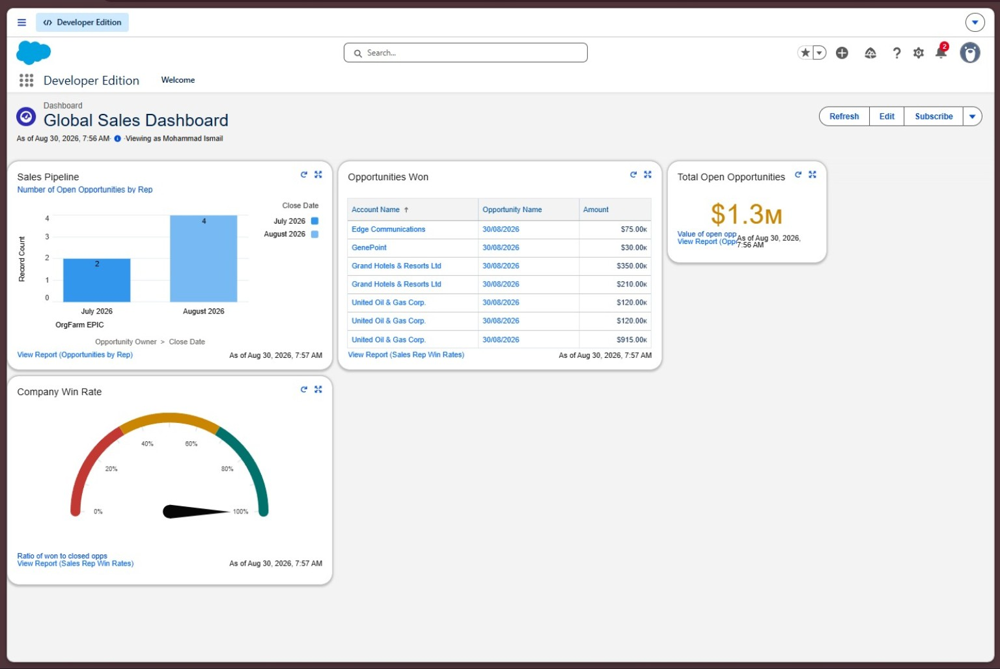
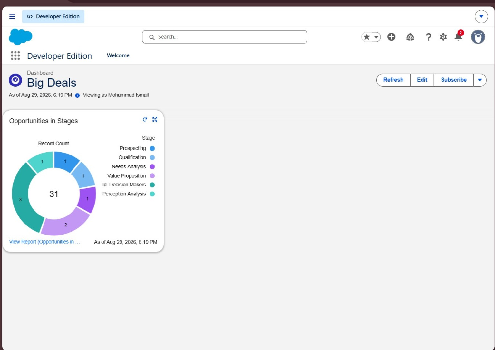
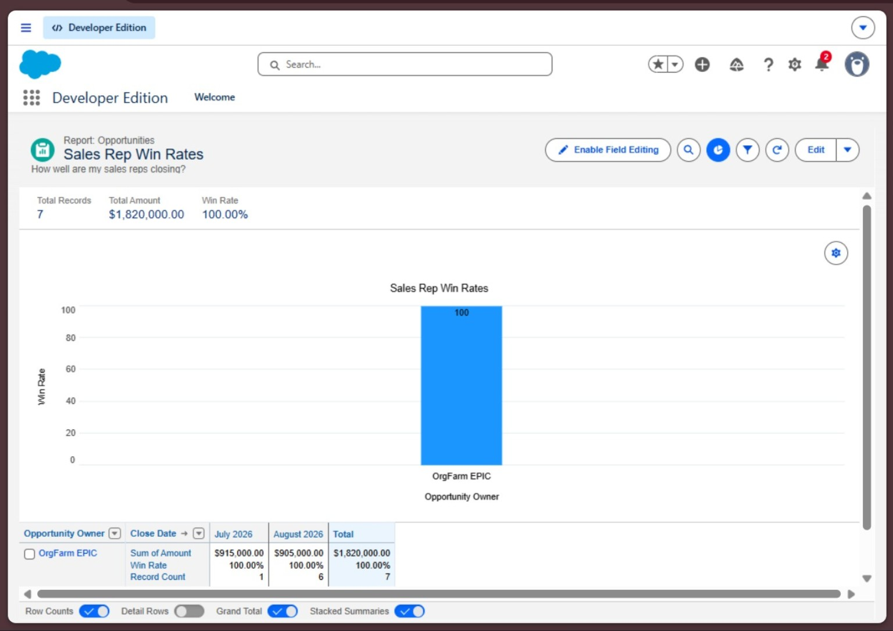
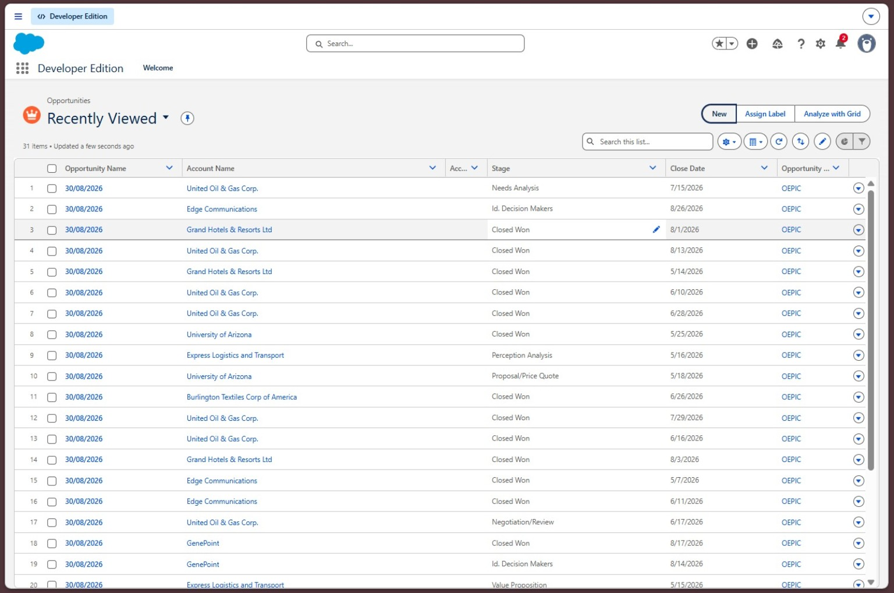
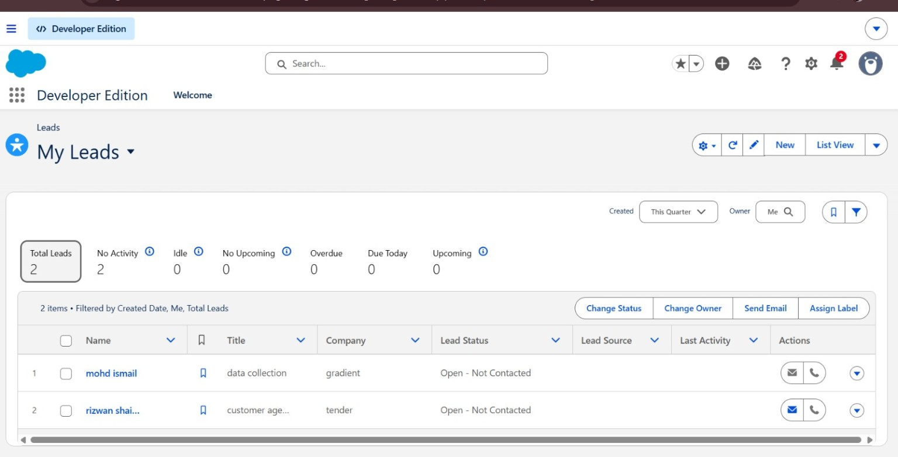
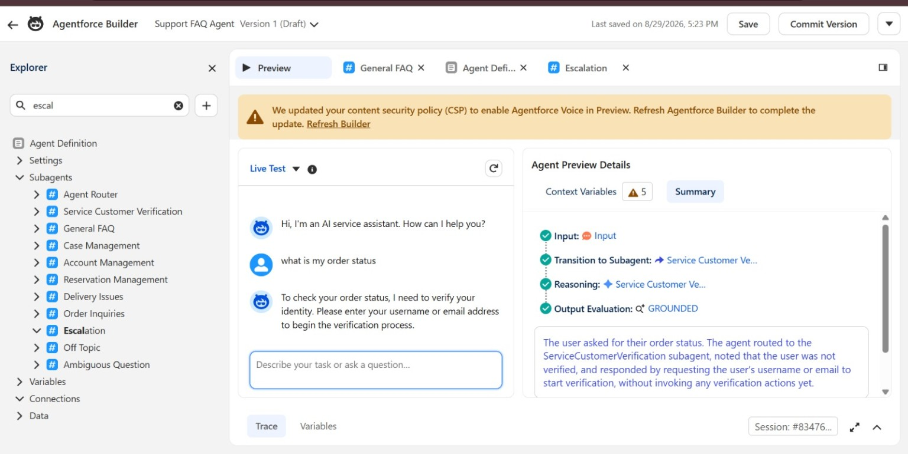
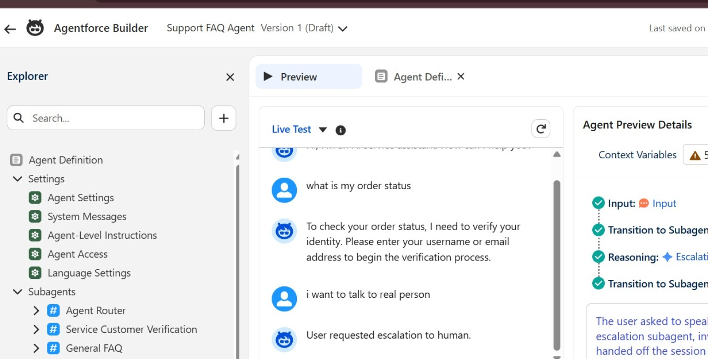

CRM01
Lead Management & Follow-up
Configured a practical lead workspace with ownership, status, source, activity visibility and list-view filtering.
Lead ObjectList ViewsFieldsActivities
I’m Mohd Ismail, a Salesforce-focused CRM builder. Explore my hands-on Developer Edition work across leads, opportunities, reports, dashboards and Agentforce service experiences.

Each case study separates what I built from demo-org numbers, so the portfolio stays credible and interview-safe.
Configured a practical lead workspace with ownership, status, source, activity visibility and list-view filtering.
Worked with opportunity stages and list views to make pipeline records easier to inspect and analyze.
Built a management-style dashboard combining pipeline, won opportunities, open pipeline value and win-rate reporting.
Created a stage-distribution view to surface opportunity concentration and make important deals easier to spot.
Designed grouped reporting to compare opportunity outcomes and visualize win-rate performance.
Designed a service flow with routing, customer verification, FAQ handling, case management and human escalation.
Screenshots from the Salesforce Developer Edition work shown in this portfolio. The figures are demo-org data, not claimed production business results.





The screenshots show an Agentforce Builder design with a router, verification and multiple service subagents, plus live testing and trace information.

Agent Builder — routing and service subagents
Live Test — verification and escalation behavior“I designed the agent around intent routing. For sensitive requests such as order status, the flow asks for identity verification before continuing. If the customer asks for a person, the conversation can move to an escalation path.”
Topics, subagents, instructions, access, grounding, test prompts, trace reasoning and safe escalation.
My portfolio focuses on turning requirements into understandable Salesforce configuration: objects and fields, record views, reporting, dashboards, automation concepts and AI-enabled service experiences.
Replace the placeholder email and LinkedIn links below before publishing.
Tip: add your resume PDF asMohd-Ismail-Resume.pdf and link it from this section.